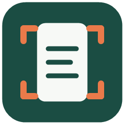

01
框选屏幕
按下截图快捷键，拖动鼠标框出需要识别的区域。
默认：Ctrl + Shift + A
墨识 OCR墨识 OCR 是一个安静待在托盘里的截图识别工具。框选、识别、复制，三步把图片里的文字带走。
让信息流动起来，
而不是停在屏幕里。
QUICK START
不打开复杂面板，不打断当前工作。墨识 OCR 把识别藏在你已经熟悉的快捷键里。
按下截图快捷键，拖动鼠标框出需要识别的区域。
默认：Ctrl + Shift + A图片会被送入百度 OCR，结果很快出现在识别窗口。
支持 PNG · JPG · WEBP · BMP识别成功后自动复制，回到原来的工作流继续输入。
Esc 隐藏界面，软件继续运行THE TOOLKIT
把高频的小事做顺，就是效率工具存在的意义。
点击关闭只会收起窗口，随时从系统托盘重新打开。
主界面与设置页同步切换，夜里工作不刺眼。
最近 30 条识别与翻译记录保存在本机，查找不丢失。
识别后可直接翻译为常用语言，长文本会自动分段。
Windows x64 版本无需预装 .NET。
密钥保存在 Windows 凭据管理器中。
设置页支持 F1–F24 直接录入。